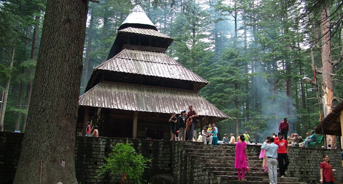

SHIMLA TOUR FROM CHANDIGARH NO 3
Day 01: Chandigarh - Shimla (135 Kms.) : Morning drive from Chandigarh to Shimla, on arrival check-in at hotel. Rest of the day free for leisure time and visit mall road and shopping. Dinner and overnight stay at hotel.
The town Shimla built in the nineteenth century when the Gurkha Wars came to an end. In 1864 the Viceroy, John Lawrence anointed Shimla, as the summer capital of British India. With Lawrence came the Viceroy Council, the Imperial Secretariat, representatives of the Indian princes and foreign envoys. As the town grew to become the workshop of the Empire, an reverential visitor observed, every pigeonhole cradled an embryo of a war or death. Despite the fact that up to the time of Indian independence in 1947, Shimla officially remained only the summer capital, yet the Government spent more time in these hills.
Day 02: Shimla - Kufri - Shimla: Morning proceed for the sightseeing of Shimla covering Kalbadevi Temple, Jakhu Temple, Hanuman Temple or stop for a while at the beautiful stained-glass-windows of Christ Church, which was built in the 1850 's. Afternoon excursion to Kufri from Shimla, an exotica of nature as a place surrounded by dense forest and snow capped mountains amidst virgin peaks and natures flora and fauna where one can completely relax and tune oneself for natural beauty, Evening free to enjoy the scenic beauty of Kufri. Fagu, Indira Gandhi Holiday Home and enjoy horse riding in the apple orchids. Return to the Hotel Rest of the day is free to explore various scenic sights or visit mall road and shopping. Dinner and overnight stay at Shimla.
Day 03: Shimla – Chandigarh, Departure: After breakfast drive back to Chandigarh.
End of the services.